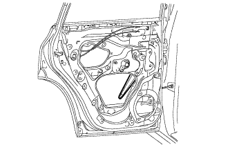
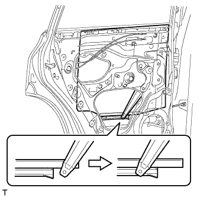
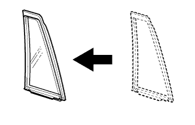
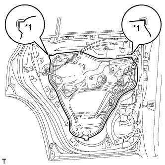
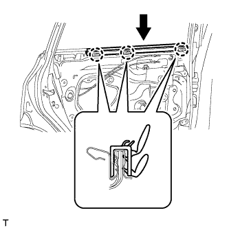
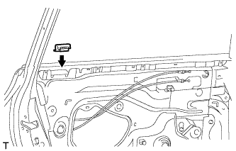
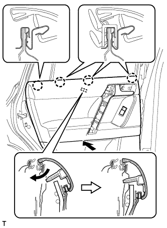
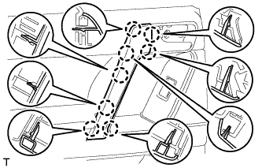
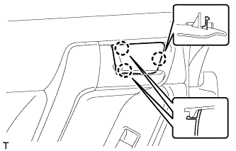

МОЛДИНГ РАМЫ ОКНА ЗАДНЕЙ ДВЕРИ > УСТАНОВКА |
| Параметр / Устройство | Температура |
| Кузов автомобиля | 40-60°C (104-140°F) |
| Молдинг рамы окна | 20–30°C (68–86°F) |
| 1. УСТАНОВИТЕ ПЕРЕДНИЙ МОЛДИНГ РАМЫ ОКНА ЛЕВОЙ ЗАДНЕЙ ДВЕРИ |
Очистите поверхность кузова автомобиля.
С помощью нагревательной лампы разогрейте поверхность кузова.
Снимите двухстороннюю клейкую ленту с поверхности кузова автомобиля.
Удалите остатки клейкой ленты чистящим средством.
Установите новый передний молдинг оконной рамы задней двери.
С помощью нагревательной лампы прогрейте новый передний молдинг рамы окна задней двери и поверхность кузова автомобиля.
Снимите с поверхности переднего молдинга рамы окна задней двери отслаивающуюся бумагу.
Закрепите фиксатор и двухстороннюю клейкую ленту, чтобы установить передний молдинг рамы окна задней двери.
Установите новый фиксатор молдинга рамы окна двери.
| 2. УСТАНОВИТЕ УПЛОТНИТЕЛЬ ЛЕВОЙ ЗАДНЕЙ ДВЕРИ |
Установите верхнюю часть уплотнителя задней двери, закрепив ее фиксатором.
| 3. УСТАНОВИТЕ МОЛДИНГ РЕМНЯ ЛЕВОЙ ЗАДНЕЙ ДВЕРИ |
Установите молдинг ремня задней двери, закрепив его 7 захватами.
| 4. УСТАНОВИТЕ СТЕКЛО ЗАДНЕЙ ЛЕВОЙ ДВЕРИ В СБОРЕ |
Подсоедините провод к отрицательному (-) выводу аккумуляторной батареи и разъему электродвигателя стеклоподъемника задней двери.
|  |
Подсоедините переключатель электрического стеклоподъемника в сборе и сместите рычаг стеклоподъемника таким образом, чтобы ролик на рычаге был виден через технологическое отверстие.
Отсоедините переключатель электрического стеклоподъемника в сборе и разъем электродвигателя стеклоподъемника задней двери.
Отсоедините провод от отрицательного (-) вывода аккумуляторной батареи.
|  |
Вставьте стекло задней двери в панель задней двери вдоль направляющей стекла задней двери в направлении, указанном на рисунке стрелками.
| 5. УСТАНОВИТЕ НЕОПУСКНОЕ СТЕКЛО ЛЕВОЙ ЗАДНЕЙ ДВЕРИ |
|  |
Установите уплотнитель неопускного стекла задней двери на неопускное стекло задней двери.
| 6. УСТАНОВИТЕ ПОПЕРЕЧИНУ ОКНА ЛЕВОЙ ЗАДНЕЙ ДВЕРИ В СБОРЕ |
Установите поперечину окна задней двери в сборе сверху вниз.
Установите на направляющую стекла поперечину окна задней двери.
Вверните болт временного крепления в поперечину окна задней двери.
Установите поперечину окна задней двери в сборе.
Вверните 2 болта и винт.
Затяните болт временного крепления, чтобы установить поперечину окна задней двери в сборе.
| 7. УСТАНОВИТЕ НАПРАВЛЯЮЩУЮ СТЕКЛА ЛЕВОЙ ЗАДНЕЙ ДВЕРИ |
Установите направляющую стекла.
| 8. УСТАНОВИТЕ КРЫШКУ ТЕХНОЛОГИЧЕСКОГО ОТВЕРСТИЯ ЛЕВОЙ ЗАДНЕЙ ДВЕРИ |
Наклейте новую бутиловую ленту на панель задней двери.
|  |
Пропустите трос дистанционного управления замком задней двери и внутренний трос замка задней двери через новую крышку технологического отверстия задней двери.
Закрепите крышку технологического отверстия задней двери, используя контрольные точки на панели задней двери.
| *1 | Контрольная точка |
Подсоедините разъем.
Установите жгут проводов задней двери и закрепите его 2 хомутами.
| 9. УСТАНОВИТЕ ВНУТРЕННИЙ УПЛОТНИТЕЛЬ СТЕКЛА ЛЕВОЙ ЗАДНЕЙ ДВЕРИ |
|  |
Введите в зацепление 3 захвата, чтобы установить внутренний уплотнитель стекла задней двери, как показано на рисунке.
| 10. УСТАНОВИТЕ ПАНЕЛЬ ОБЛИЦОВКИ ЛЕВОЙ ЗАДНЕЙ ДВЕРИ |
|  |
Установите зажим на дверную панель.
Подсоедините трос дистанционного управления замком задней двери в сборе и внутренний трос замка задней двери в сборе.
Подсоедините все разъемы.
|  |
Закрепите панель облицовки задней двери с помощью 4 захватов на внутреннем уплотнителе стекла задней двери, как показано на рисунке.
Введите в зацепление 9 фиксаторов и установите панель облицовки задней двери в сборе.
Вверните 3 винта.
| 11. УСТАНОВИТЕ ЛЕВУЮ НАКЛАДКУ ВЕРХНЕГО ПОРУЧНЯ |
|  |
Введите в зацепление 8 захватов и установите облицовку верхнего поручня.
| 12. УСТАНОВИТЕ ДЕРЖАТЕЛЬ ВНУТРЕННЕЙ РУЧКИ ЛЕВОЙ ДВЕРИ № 2 |
|  |
Введите в зацепление 3 захвата, чтобы установить оправу внутренней ручки задней двери.
| 13. ПОДСОЕДИНИТЕ ПРОВОД К ОТРИЦАТЕЛЬНОМУ ВЫВОДУ АККУМУЛЯТОРНОЙ БАТАРЕИ |